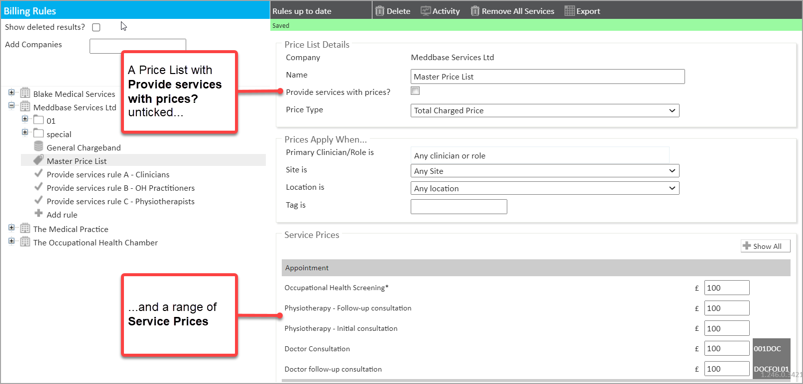
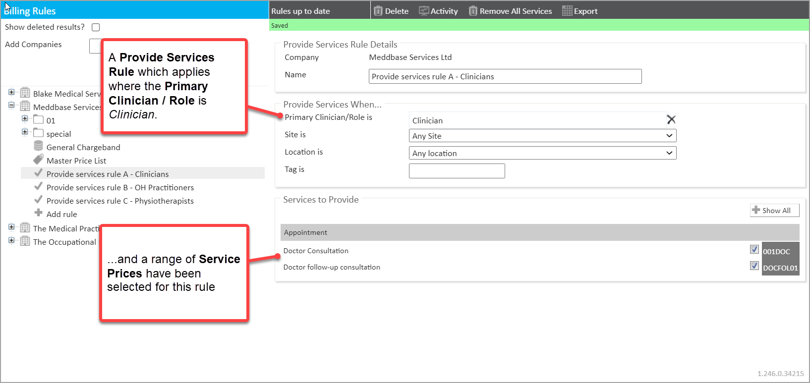
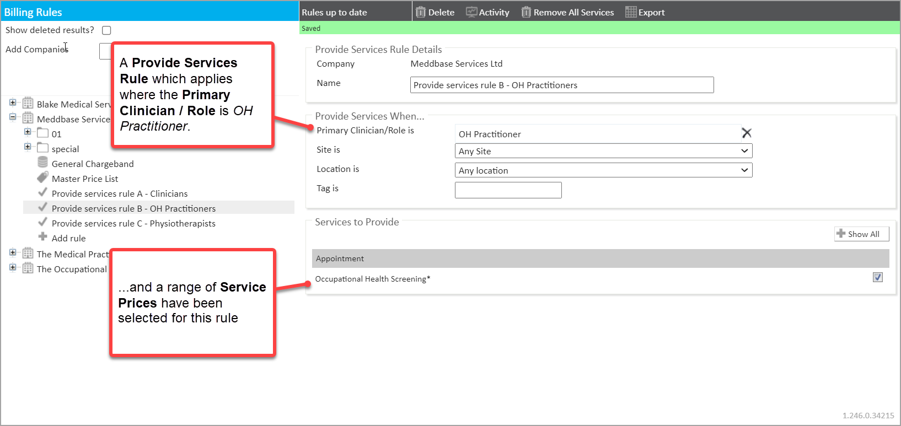
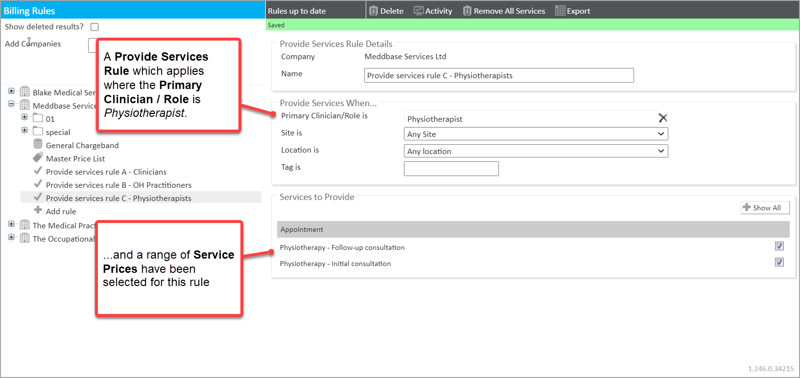
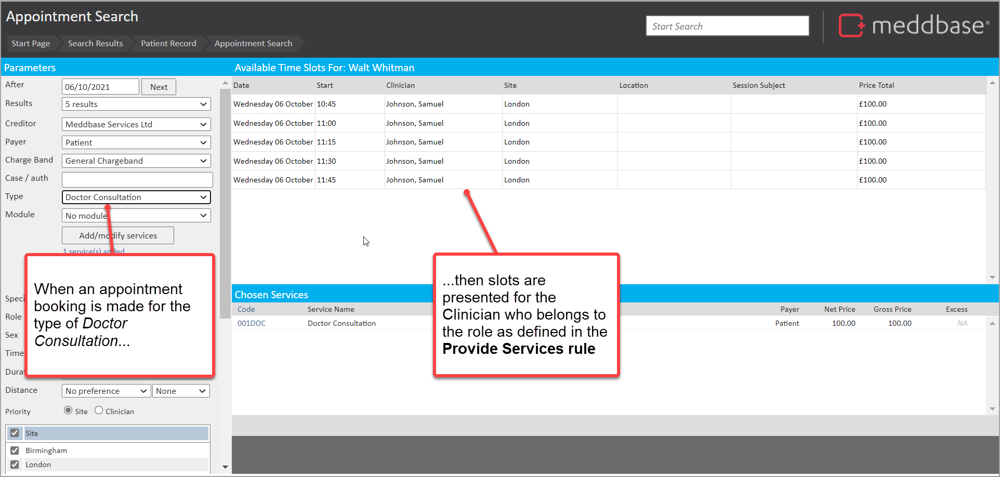
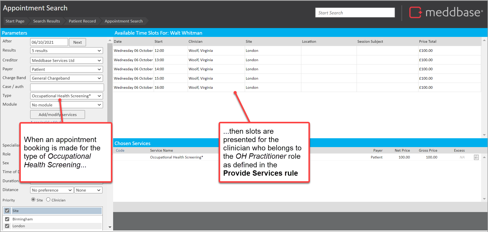

Once the Provide Services Rule has been configured there are lots of ways it can be used to make services available under different conditions.
What is the Purpose of this Article?
To provide a practical example of how a set of Provide Services Rules on a Charge Band can work to make specific services available when booking an appointment.
1 - A pre-requisite set of 'Provide Services Rules' configured on a Charge Band
Let's say that a Charge Band has been configured to include a Price List and several Provide Services Rules have been configured to provide services based on Role. In this case, Roles would have been configured and clinicians assigned to those roles.
An illustration of this example configuration is set out below:
1. A Price List with
The Provide services with prices? unticked
A range of services with prices applied

2. A 'Provide services rule A - Clincians' with
A Provide Services When... setting where the Primary Clinician/Role is set as Clinician
A ticked list of services relevant for this rule (which is a subset of the services on the Price List)

3. A 'Provide services rule B - OH Practitioners' with
A Provide Services When... setting where the Primary Clinician/Role is set as OH Practitioner
A ticked list of services relevant for this rule (which is a subset of the services on the Price List)

4. A 'Provide services rule C - Physiotherapist' with
A Provide Services When... setting where the Primary Clinician/Role is set as Physiotherapist
A ticked list of services relevant for this rule (which is a subset of the services on the Price List)

2 - A booking for a patient on the designated Charge Band that follow the 'Provide Services Rule'
With this configuration in place, bookings on this Charge Band will restrict the services that can be delivered by a clinician/practitioner according to the role they have.
Example A - Booking a 'Doctor Consultation', restricted to the role of Clinician
In the scenario:
1. Where
The Patient is on the Charge Band where 'Provide Service' rules have been configured
A specific clinician Samuel Johnson been added to the role of Clinician
The role of Clinician can provide the service Doctor Consultations (as configured in the Provide Services Rule applied for the Charge Band)
Slots are presents for the clinician Samuel Johnson who has been added to the role of Clinician

Example B - Booking an 'Occupational Health screening', restricted to the role of OH Practitioner
In the scenario
1. Where
The Patient is on the Charge Band where 'Provide Service' rules have been configured
A specific clinician Virginia Woolf been added to the role of OH Practitioner
The role of OH Practitioner can provide the service Occupational Health Screening (as configured in the Provide Services Rule applied for the Charge Band)
And the user chooses Occupational Health Screening
3. Then
Slots are presents for the clinician Virginia Woolf who has been added to the role of OH Practitioner

Example C - Booking an 'Physiotherapy - Intial Consultation', restricted to the role of Physiotherapist
In the scenario
1. Where
The Patient is on the Charge Band where 'Provide Service' rules have been configured
A specific clinician Wallace Stevens been added to the role of Physiotherapist
The role of Physiotherapist can provide the service Physiotherapy - Initial Consultation (as configured in the Provide Services Rule applied for the Charge Band)